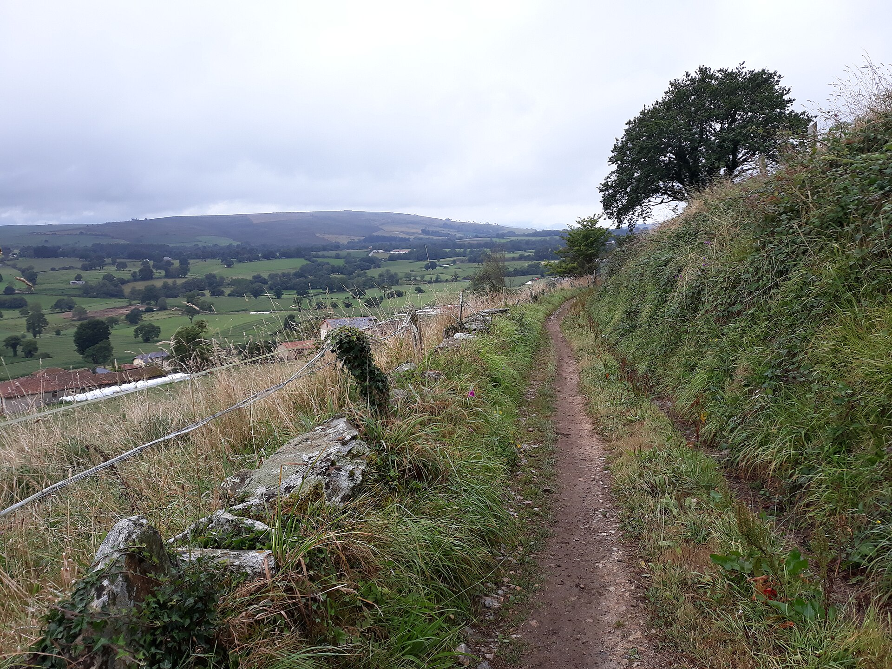
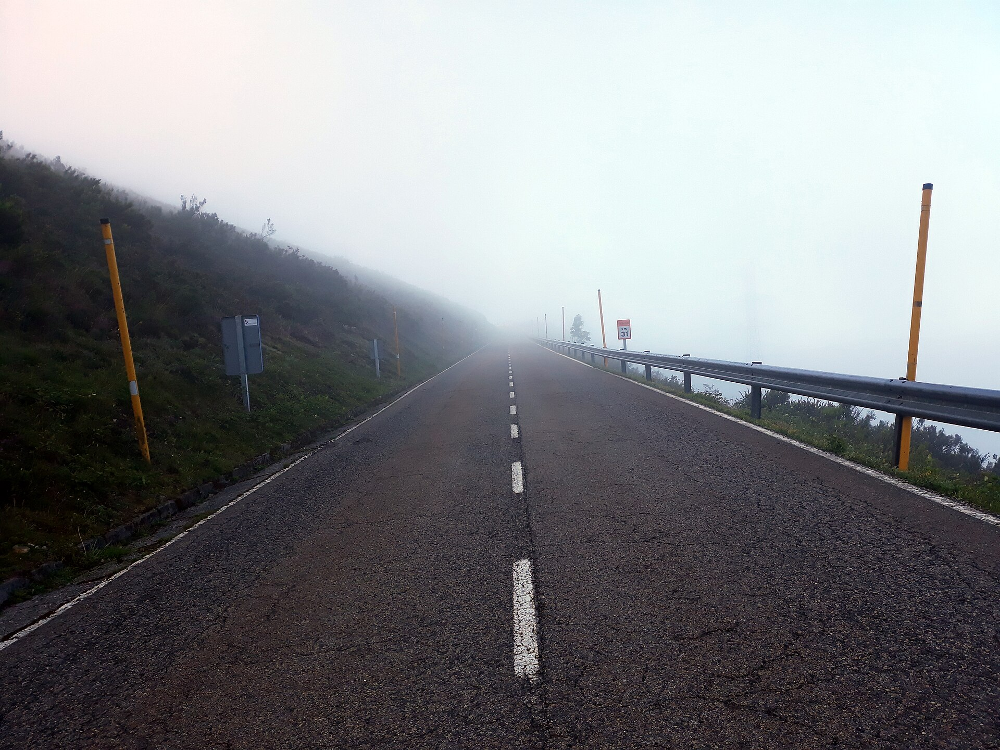
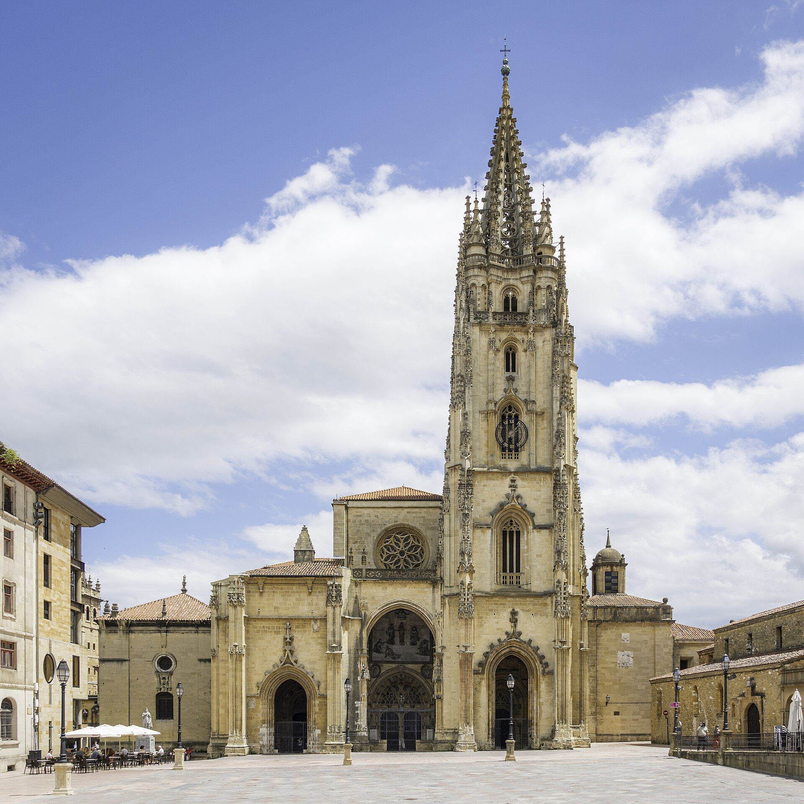
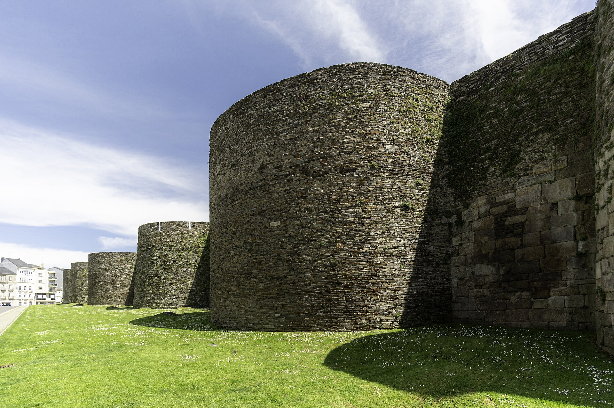
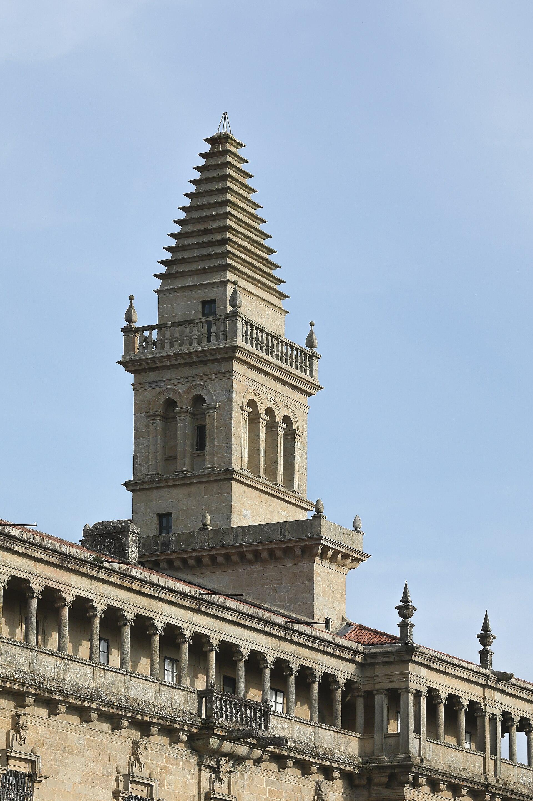

A self-guided mountain-bike crossing of the wildest Camino — forest singletrack, drovers' trails and granite mountain passes from Oviedo to the cathedral square.

Out of the Asturian capital, over the Cordillera Cantábrica, down into Galicia, then joining the busy Camino Francés for the final run to Santiago.
● Overnight stops · ◆ Melide, where the Primitivo meets the Camino Francés. Interactive — drag and zoom. Route shown is indicative.
A few real reference images from the line: Asturian mountain road, the Puerto del Palo atmosphere, Lugo's Roman walls and the cathedral finish in Santiago.



The route is front-loaded: the queen stage out of Pola de Allande over the Puerto del Palo is nearly 2,400 m of ascent in a single day. After Lugo it eases.
Eight days end to end: arrive and acclimatise, six days in the saddle, depart Santiago. Distances and ascent below reflect the established mountain-bike line.
Transfer in from Asturias airport (OVD). Collect your first stamp at the San Salvador cathedral, then spend the evening in the sidrerías — cider poured from overhead and proper Asturian cooking. Pick up the bike and check your setup tonight if the rental shop can deliver early.
Out on quiet lanes, then forest singletrack down to the river Nora and racy riverside trail past the Peñaflor pinnacle into the market town of Grado. Climb the Alto de El Fresno and drop a fast 5 km descent to the Río Narcea before rolling into Salas under the Cordillera. A real warm-up, not a gentle one.
A long, steady climb into the Cordillera past the isolated hamlet of Espina, then through Tineo — a Roman gold-mining town — and over the Alto de Guardia on stone paths to a technical descent. At Borres the Camino splits; the rideable line takes the forest-and-village trails down to Pola de Allande rather than the Hospitales walking route (see notes).
The big one. A long climb to the Puerto del Palo, the high point of the whole route, then a technical descent on ancient paths and an 800 m-plus plunge into the Grandas valley on singletrack and switchbacks. Cross into Galicia at the Puerto del Acebo and finish in A Fonsagrada, the highest town in Galicia. Pace the morning — this is your hardest day by a wide margin.
Climbing paths to the Alto de Montouto, with a ruined pilgrims' hospital and a Celtic burial chamber, then a long descent through Galician smallholdings where fields are still worked by hand. Roll into Lugo and walk its complete Roman walls in the evening — and eat the pulpo with a cold Albariño.
Down to cross the Río Miño, along an old Roman road, over the open Hospital das Seixas moorland and into Melide — where you pick up the Camino Francés and the trail suddenly fills with pilgrims. Continue through oak and eucalyptus to a quiet overnight near Sedor, poised for the run-in.
Through Arzúa and a maze of granite hamlets on corredoiras — ancient stone village paths that ride beautifully — past Lavacolla and up to Monte do Gozo for the first sight of the city. Then down to the Praza do Obradoiro and the cathedral. Collect your Compostela.
Hand back the bike and fly out of Santiago (SCQ). Worth tagging an extra night to see the cathedral's botafumeiro swing and decompress before the long haul back.
There are no nonstop flights from MSP to either airport — everything connects, usually through Madrid or Dublin. Booking a multi-city (open-jaw) ticket means you never have to backtrack the 320 km you just rode.
Round-trip economy, open-jaw, depending on season and how far ahead you book. Shoulder season (late spring / October) and early booking land nearer the low end. Estimate only — no dates set; check Google Flights / Skyscanner live.
Asturias airport sits ~40–45 min from Oviedo; an airport bus runs into the city for about €9. In Santiago the airport is a short taxi from the old town.
Several shops specialise in Camino rentals — they deliver the bike to your Oviedo hotel and collect it in Santiago, so the one-way logistics are handled. Since you're carrying your own gear, you skip the luggage-transfer premium entirely.
Outfits like Tournride, CCT Bike Rental, Bikeleon and Bicigrino all do MTB rental with delivery to your start point and drop-off in Santiago. Rentals come with a repair kit, pump, lock and the option of a rack and panniers. You arrange accommodation as you go — albergues, pensións and casas rurales are spaced along every stage.
On the technical descents off the Puerto del Palo and the Grandas switchbacks, a bikepacking setup (seat pack + bar roll + frame bag) handles far better than heavy rear panniers. Rentals can supply a rack and panniers if you'd rather, but keep the weight low and central for the singletrack. Bring your own saddle and clipless pedals — the shops fit them to the rental.
A hardtail MTB is the standard rental for this route and the right tool for the rocky upper sections. A capable gravel bike can do most of it, but the Asturian descents reward a mountain bike. Skip the e-MTB — with your gravel-racing base you don't need it, and it adds a 7-day rental minimum.
Reserve at least a week ahead (more in summer); rentals usually carry a 5-day minimum, which the full route clears easily. Delivery to a hotel with a real reception desk is smoother than an auto-check-in apartment.
Doing it independently — renting only the bike and booking your own beds — saves roughly a thousand dollars over an all-in operator package. Here's the side-by-side, per person, all figures excluding flights unless noted. Treat as estimates.
The famous high route over the hospital ruins is a walkers' mountain path — largely hike-a-bike, not a ride. Even dedicated MTB operators take the Pola de Allande line instead. If you want to stand among the ruins you can detour and carry the bike up, but treat it as a pilgrimage moment, not a descent. The rideable off-road maximum is the Pola trails plus the singletrack and corredoiras that make up most of the route anyway.
To earn the certificate by bike you must ride at least the final 200 km and collect a couple of stamps a day in your credential. Starting in Oviedo (322 km) clears that comfortably.

finish line · Praza do Obradoiro, Santiago de CompostelaLate May–June and September–early October give the best mix of long days, settled weather and open accommodation. The high passes can be cold and fogbound; pack a layer even in summer. Avoid the deep shoulder months when mountain albergues thin out.
This is a genuine grade 3–4 mountain-bike route: singletrack, steep pitches and occasional very rocky sections where even strong riders dismount and push. Well within reach for a fit gravel racer — but it's a real ride, not a road tour with dirt.